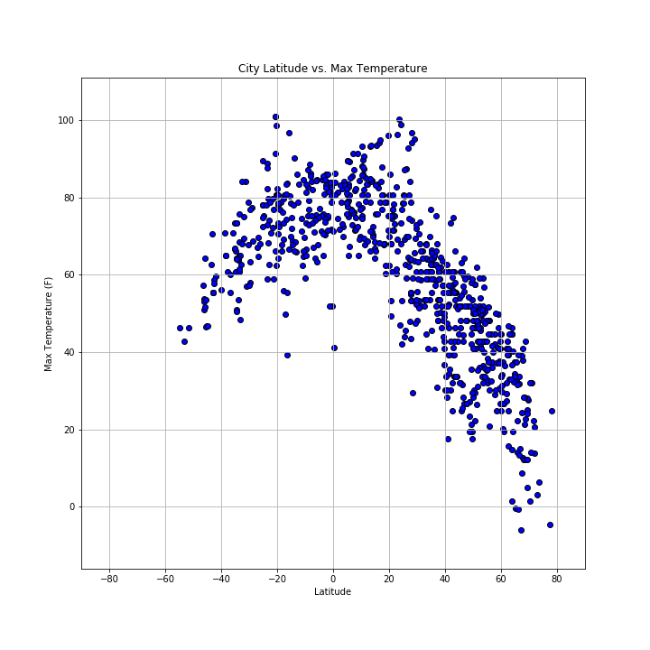

Summary: Latitude vs. X

In this project, I worked to analyze different weather patterns and how they may be affected by a cities location based on latitude. In order to accomplish this, I took the following steps:
- I worked with Python's base functionality randomly generate coordinates
- Using the coordinates, I utilized citipy's neareast city functionality to grab the nearest cities to a pair of coordinates. I also eliminated duplicate city entries.
- Using the cities names, I then gathered the longitude and latitude in addition to the Temperature, Humidity, Cloudiness and Windspeed from each city.
- I used Pandas to organize and clean data for a dataframe to prepare it for graphical analysis
- Lastly, I used MatPlotLib to graph data based on latitude on the x-axis and different variables (listed above) on the y-axis.
On this website, you will see the output graphs and CSV file used in the data as well as a comparison of the number of different variables for each city. In analyzing the data and using the random number generators, I realized a few shortcomings in this approach. First, when using the nearest city functionality on the citipy, there were many duplicate cities. This is due to the fact that one city may have many coordinates closest to it (like an island). Lastly, based on the documentation of citipy, it categorizes a city as having a specific population, however, there may be smaller cities that with particular weather patterns, or there may be patches of land that do not have inhabitants and do not have cities.
Enjoy!